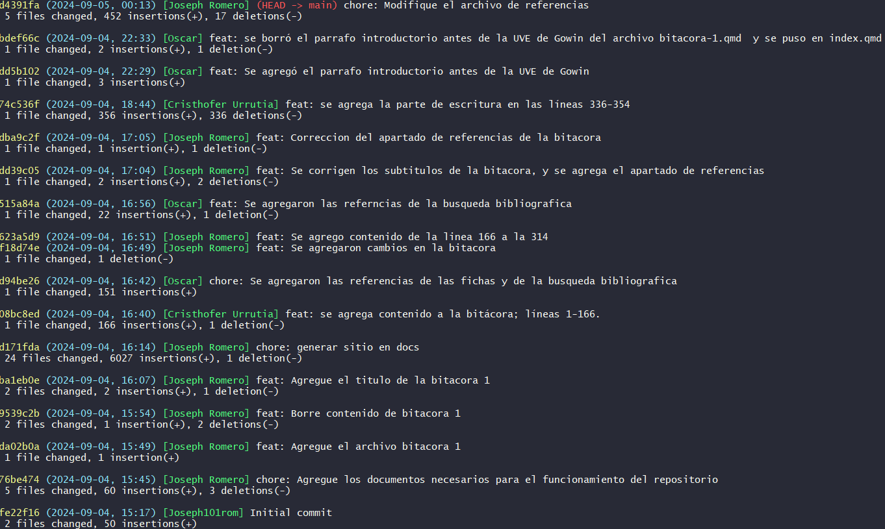
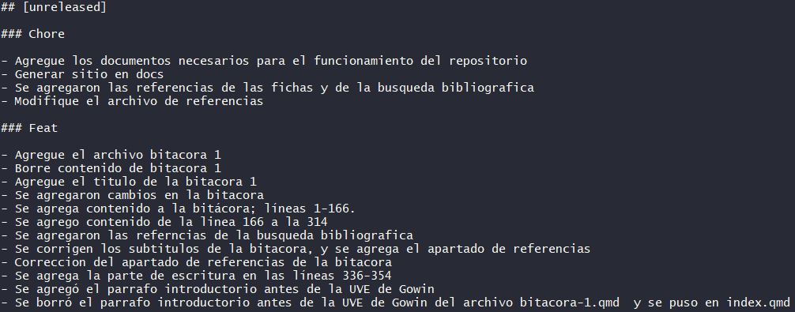
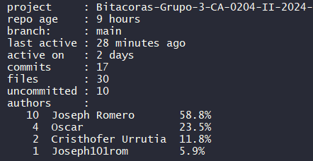
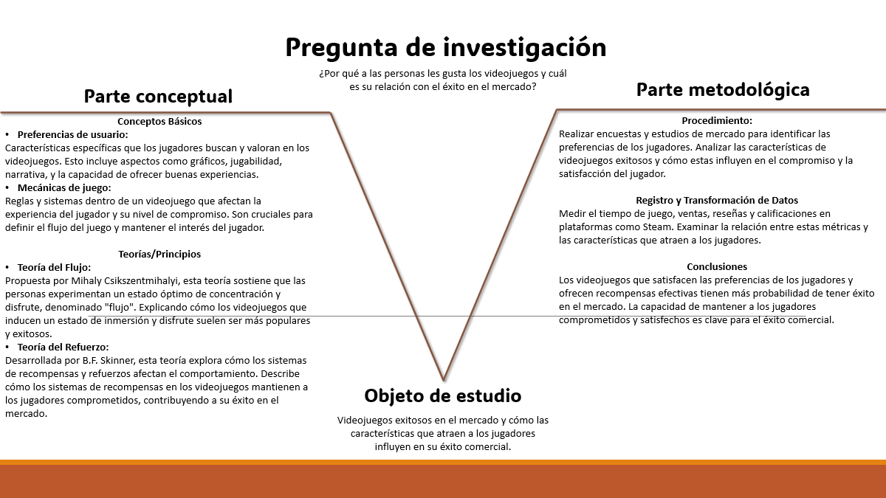

1 Bitácora 1
1.1 Comando 1:

1.2 Comando 2:

1.3 Comando 3:

2 Parte planificacion
2.1 Pregunta de investigación:
2.1.1 Defincion del idea
“Análisis del Éxito Comercial de Videojuegos Basado en Características del Juego”
2.1.2 Conceptualización de la idea:
Análisis: Por análisis se entiende el examen minucioso y pormenorizado de un asunto para conocer su naturaleza, sus características, su estado y los factores que intervienen en todo ello. Fuente
Éxito: El éxito es el resultado satisfactorio de una acción o proyecto. Fuente
Comercial: Comercial es un adjetivo que se refiere a lo vinculado con el comercio o con las personas que se dedican a comprar y/o vender bienes o servicios. El término comercio, por su parte, puede hacer mención a esta actividad o al espacio físico donde se desarrolla. Fuente
Videojuegos: Los videojuegos son softwares de juegos electrónicos desarrollados para el entretenimiento a través de un aparato electrónico como máquinas arcade, consolas, computadores o dispositivos digitales. Fuente
Basado: La palabra “basado” es el participio del verbo “basar” y se utiliza como un adjetivo para describir algo que se ha fundamentado o apoyado en una base específica. Fuente
Característica: Las características de un objeto, una persona o un referente cualquiera son aquellos rasgos, condiciones o elementos que le resultan propios, reconocibles y que sirven para distinguirlo de otros referentes similares. Así, por ejemplo, las características de un perro incluyen su color, su tamaño, su raza, su conducta, su edad y todo aquello que nos sirva para distinguirlo del resto de los animales. Fuente
Juego: Ejercicio recreativo o de competición sometido a reglas, y en el cual se gana o se pierde. Fuente
2.1.3 Identificación de tensiones:
Definición de Variables y Métricas: Consideramos fundamental definir correctamente las variables y las métricas de manera clara y concisa, ya que en caso de no hacerlo puede resultar en una labor mucho más extensa y complicada de lo esperado.
Selección de Técnicas de Análisis: En caso de no realizar una correcta selección de técnicas de análisis, podríamos enfrentarnos ante un proceso más largo y complicado de lo que debería de ser, además de no brindar información fidedigna al analizar los datos con una técnica inadecuada.
Definición de “Éxito Comercial”: Pensamos que establecer una métrica clara y consistente para medir el éxito comercial de los videojuegos puede representar todo un desafío, pues este es un concepto que puede depender de factores como ventas, popularidad e ingresos, lo que lo vuelve un poco más complicado el “limitar” a la hora de definirlo.
Identificación de Características Clave del Juego: En caso de no escoger las características de videojuegos adecuadas, puede que estas no estén presentes en nuestra base de datos o que no nos lleven a conclusiones relevantes, por ende afectando la integridad del proyecto.
Complejidad de las Relaciones: Entender las relaciones que pueden o no darse entre las características del juego y el éxito comercial puede ser algo complicado, pues existen interacciones y efectos que no son precisamente lineales y que podrían requerir de técnicas de análisis avanzadas (de las cuales no disponemos en este curso), lo que añade una capa más de complejidad a nuestro estudio que no fué contemplada al inicio.
Comparabilidad entre Juegos: Los videojuegos pueden diferir significativamente en términos de presupuesto, marketing y otros factores externos al juego en sí, lo cual puede hacer más difícil aislar el efecto de las características de cada juego en el éxito comercial y por ende dificultarnos la labor de llegar a concluir alguna relación entre el juego y las características que lo llevaron ser exitoso.
2.1.4 Reformulación de la idea en modo pregunta
¿Cómo se puede analizar el mercado de los videojuegos?
¿Por qué es importante analizar el mercado de los videojuegos para reconocer desencadenantes del éxito de la industria?
¿Qué características son fundamentales para el éxito comercial de un videojuego dado el contexto donde fue publicado?
¿Por qué a las personas les atraen los videojuegos y cuál es su relación con el éxito comercial de los videojuegos?
2.1.5 Argumentación de la preguntas:
¿Cómo se puede analizar el mercado de los videojuegos?
Contrargumentos:
Lógica: El análisis podría ser limitado si se considerara un subanálisis predictivo. Esto debido a que el mercado puede dar giros radicales; por ejemplo, se puede dar el caso de que anuncien una nueva consola de videojuegos.
Ética: Existen videojuegos cuya temática es la violencia y realizar un proyecto donde se mencionan dichos videojuegos podría conducir a una publicidad accidental de un mercado de juegos violentos.
Emocional: Un análisis simplificado del mercado de los videojuegos puede omitir aspectos como la propia perspectiva de un consumidor frente a cierto tipo de videojuegos, por ejemplo.
Argumentos:
Lógica: El análisis de este mercado podría aprovecharse de herramientas microeconómicas y macroeconómicas, pues a fin de cuentas sigue siguiendo un mercado.
Ética: La mayoría de videojuegos requieren conexión permanente a internet, además, plataformas de videojuegos oficiales como Steam permiten acceder a bases de datos sobre videojugadores. Por lo tanto la información obtenida probablemente esté inalterada.
Emocional: Gracias a los datos se podría ver que tan rentable es la industria de los videojuegos y de esta manera informar a la gente sobre dicha conclusión, pues existen muchas personas desempleadas que podrían incorporarse al mercado.
Conclusión: El mercado de los videojuegos, como cualquier otro, presenta sus propias problemáticas micro y macroeconómicas. Es gracias a la salvedad de las herramientas económicas que se podrá hacer un análisis desde ambas perspectivas (consumidor y empresas), sin embargo se tendría un rezago en la parte emocional de las preferencias, por lo que el análisis puede llegar a ser considerado tosco.
¿Por qué es importante analizar el mercado de los videojuegos para reconocer desencadenantes del éxito de la industria?
Contrargumentos:
Lógica: Existen otros mercados cuya influencia trasciende sustancialmente al de los videojuegos, un ejemplo de estos mercados puede ser el del petróleo, pues muchas actividades del día a día dependen de dicho recurso.
Ética: En los últimos años se ha generado una gran ola de denuncias por parte de los trabajadores hacía las compañías desarrolladoras de videojuegos, lamentablemente, existen países como Japón en donde por su cultura los trabajadores no suelen visibilizar las problemáticas en los ambientes laborales. Por esta razón, la importancia de analizar este mercado no podría estar tan bien conceptualizada en este tipo de países. También podría darse el caso de que ciertos datos estén mostrando información “falsa”, pues si se quisiera analizar las horas jugadas por jugador para asociar esto con las ventas, habría que tener en cuenta que muchas de esas horas corresponden a gente que estaba afk.
Emocional: La preferencia de los consumidores estarían respaldadas bajo datos estadísticos; lo que implica que se ignorarán experiencias que los jugadores hayan experimentado mientras jugaban.
Argumentos:
Lógica: A nivel cultural sería interesante sonsacar la importancia de este mercado. Como expresión artística, los videojuegos podrían indicar una respuesta social a ciertos fenómenos de la actualidad como ha pasado con la música. Los datos estadísticos ayudarían a esclarecer este suceso.
Ética: Un país en desarrollo como Costa Rica podría tomar acción al incursionar (o no) en el mercado de videojuegos gracias a las estadísticas. Si un país lograra éxito en este mercado sería posible aumentar las fuentes de ingresos.
Emocional: Para muchas personas los videojuegos se les presentaron en su infancia; sería de especial interés conocer qué empresas han permanecido con sus sagas longevas de videojuegos y de esta manera complacer a sus consumidores.
Conclusión: Pese a que bajo ciertas medidas los videojuegos no sean una industria tan influyente, siempre existirá este mercado de nicho que se mueve principalmente por razones emocionales. También es importante recalcar irregularidades del mercado para que se puedan corregir en el futuro y de esta manera mejorar el ambiente laboral, por ejemplo. También, aunque parezca utópico por la naturaleza del tema: el análisis puede servir para que gobiernos decidan si invertir recursos en la industria.
¿Qué características son fundamentales para el éxito comercial de un videojuego dado el contexto donde fue publicado?
Contrargumentos:
Lógica: Los resultados de este análisis podrían no ser concretos. Los videojuegos empezaron a ser más notorios en la década de los 70 y desde entonces las tendencias han cambiado radicalmente.
Ética: Si se fija el análisis dentro de un período específico, se obtendrían datos sobre características propias de videojuegos violentos, un ejemplo de esto es la década 2010-2020. De esta manera, se puede dar el caso de que algún grupo de personas interpreten de manera errónea la información.
Emocional: Existen datos no parametrizables que pueden determinar el éxito de un videojuego, por ejemplo: la relación que pueden entablar varias personas en los juegos en línea.
Argumentos:
Lógica: Sería posible tener un análisis que demuestre el panorama actual de las preferencias de los videojugadores, por lo que a nivel sociológico o cultural se podrían notar patrones en las características de los videojuegos. Por ejemplo, una característica que sería de gran ayuda para este propósito es la de “géneros de los videojuegos”.
Ética: Gracias a las características notadas, se podrían realizar sugerencias acerca de cómo tendrían que ser los videojuegos para mantener al público satisfecho.
Emocional: El nicho de los videojuegos tiene una característica muy importante: la sociabilidad entre sus miembros. Realizar este análisis permitiría que las personas conozcan más acerca de sus preferencias en videojuegos y se vean incentivadas a socializar más.
Conclusión: Aunque las características sean cambiantes, vale la pena realizar un análisis sobre períodos fijos y de esta manera conocer cuáles características fueron prevalecientes en dichos períodos. Un punto bueno de este análisis es el de la posibilidad de notar las mejores características de cada época y combinarlas para tratar de combatir irregularidades del presente.
¿Por qué a las personas les atraen los videojuegos y su relación con el éxito de la industria?
Contraargumentos:
Lógica: Esta pregunta tiene una fuerte connotación emocional. Por lo tanto, resulta difícil socavar la premisa mediante datos numéricos y categóricos sencillos.
Ética: Se ha visto casos de criminales que usan como medio a los videojuegos para realizar sus actos infames. Esto sucede gracias a juegos en línea en donde por ejemplo, un extorsionador puede utilizar a un infante para sus propósitos, por este y muchos otros motivos los videojuegos son atractivos para la delincuencia y los datos serían imprecisos para notarlo.
Emocional: La atracción a los videojuegos puede conducir a una posterior adicción a los videojuegos, lo que repercute en consecuencias sociales negativas para el ya paciente psiquiátrico afectado. Desgraciadamente, la incorporación de este trastorno al DSM-V fue reciente por lo que no se tienen suficientes datos de este tema.
Argumentos:
Lógica: No podemos hablar de éxito de los videojuegos (a un nivel más profundo) basados en sus características sin antes responder a esta interrogante, pues es de la respuesta que obtenemos en una versión más primitiva (pero al mismo tiempo madura) una lista de las tan ansiadas características asociadas a dicho éxito desde el punto de vista del videojugador.
Ética: Es menester de la sociedad conocer a través de un análisis los patrones de conducta que llevaron al auge y vigencia este fenómeno. De este modo la población en general tendrá un mejor juicio y panorama acerca del tema.
Emocional: Un mundo sin videojuegos sería inimaginable para muchas personas, al final de cuentas muchas personas utilizan a los videojuegos como una herramienta para escapar de su realidad. Conocer qué factores están anudados a esta “fuga” de realidad podría ayudar a las personas a buscar ayuda psicológica y/o mejorarla.
Conclusión: El punto más débil es la falta de información que pueden tener ciertos indicadores numéricos y categóricos para abstraer esta pregunta y responder. Sin embargo, se podría solventar ese problema al investigar de manera un poco más profunda sobre la conducta humana y estadísticas que se usen en estudios con propósito similar.
2.1.6 Argumentacion a traves de datos.
Fuente de Información: La base de datos utilizada es el Steam Games Dataset, recopilado por Martin Bustos Roman en 2022 y disponible en Kaggle. Este dataset incluye información detallada sobre más de 85,000 videojuegos publicados en la plataforma Steam. El enlace de acceso es: https://doi.org/10.34740/KAGGLE/DS/2109585.
Contexto Temporal y Espacial de los Datos: Temporal: El dataset cubre videojuegos lanzados desde los inicios de Steam hasta el año 2022, lo que permite analizar la evolución del mercado de videojuegos durante un período largo. Espacial: El dataset abarca un contexto espacial mundial, lo que permite realizar análisis que reflejen las tendencias y características del mercado de videojuegos a nivel internacional.
Facilidad de Obtener la Información: La base de datos es de acceso público a través de Kaggle, lo que facilita la obtención y uso de la información. La recopilación de datos fue realizada utilizando la API de Steam, complementada con datos de Steam Spy.
Población de Estudio: La población de estudio incluye todos los videojuegos disponibles en Steam, lo que representa una cobertura extensa del mercado de videojuegos .
Muestra Observada: La muestra observada consta de más de 85,000 videojuegos, proporcionando una base sólida y representativa para el análisis.
Unidad Estadística o Individuos: Cada unidad estadística en la tabla representa un videojuego individual. Cada fila en la tabla corresponde a un juego específico con sus características particulares, como precio, fecha de lanzamiento, reseñas, entre otros.
Descripción de las Variables de la Tabla
- AppID: Identificador único del juego en Steam.
- Name: Nombre del juego.
- Release date: Fecha de lanzamiento del juego.
- Estimated owners: Número estimado de propietarios del juego.
- Peak CCU: Máximo número de usuarios concurrentes.
- Required age: Edad mínima requerida para jugar el juego.
- Price: Precio del juego en dólares estadounidenses.
- DLC count: Número de contenidos descargables (DLC) disponibles para el juego.
- About the game: Descripción breve del juego.
- Supported languages: Idiomas soportados por el juego.
- Full audio languages: Idiomas con soporte de audio completo.
- Reviews: Reseñas de los usuarios.
- Header image: URL de la imagen de encabezado del juego en la tienda.
- Website: Sitio web oficial del juego.
- Support url: URL de soporte del juego.
- Support email: Correo electrónico de soporte.
- Windows: Indica si el juego es compatible con Windows.
- Mac: Indica si el juego es compatible con Mac.
- Linux: Indica si el juego es compatible con Linux.
- Metacritic score: Puntaje del juego en Metacritic.
- Metacritic url: URL del juego en Metacritic.
- User score: Puntaje otorgado por los usuarios.
- Positive: Número de reseñas positivas.
- Negative: Número de reseñas negativas.
- Score rank: Clasificación del juego según el puntaje.
- Achievements: Número de logros disponibles en el juego.
- Recommendations: Número de recomendaciones del juego.
- Notes: Notas adicionales sobre el juego.
- Average playtime forever: Tiempo promedio de juego total.
- Average playtime two weeks: Tiempo promedio de juego en las últimas dos semanas.
- Median playtime forever: Mediana del tiempo de juego total.
- Median playtime two weeks: Mediana del tiempo de juego en las últimas dos semanas.
- Developers: Desarrolladores del juego.
- Publishers: Publicadores del juego.
- Categories: Categorías a las que pertenece el juego.
- Genres: Géneros del juego.
- Tags: Etiquetas descriptivas del juego.
- Screenshots: URL de las capturas de pantalla del juego.
- Movies: URL de los videos o tráilers del juego.
Descripción Detallada de Elementos Clave: Cada fila representa un videojuego específico. En ellas se agrupan todos los atributos del juego en cuestión, permitiendo comparaciones entre diferentes juegos y análisis de cómo sus características contribuyen a su éxito.Además las columnas representan las características específicas de cada videojuego, como su precio, número de reseñas positivas y su puntaje en Metacritic. Estas columnas son esenciales para analizar cómo diferentes factores influyen en el éxito comercial de un Juego. Por otro lado las celdas contienen los valores específicos de cada variable para cada juego. Estas celdas permiten realizar un análisis granular, observando cómo cada característica afecta el éxito de un videojuego.
Relación con la Pregunta de Investigación: La diversidad de datos (como fecha de lanzamiento, precio y popularidad) permite un análisis profundo del mercado de videojuegos, observando tendencias a lo largo del tiempo.La información sobre la cantidad de juegos, sus características y el comportamiento del consumidor es crucial para entender la dinámica del mercado. Por otra parte, variables como “Metacritic score,” “User score,” y “Estimated owners” son fundamentales para determinar qué características son más influyentes en el éxito comercial de los videojuego.
2.2 Revisión bibliográfica
2.2.1 Búsqueda de bibliografía
2.2.2 Construcción de fichas de literatura
Ficha 1:
■ Título: Manga, anime y videojuegos japoneses: análisis de los principales factores de su éxito global
■ Autor(es): Carmen Mangirón
■ Año: 2012
■ Nombre del tema: Estrategias de globalización en la cultura japonesa.
■ Forma de organizarlo:
Cronológico: Desde la crisis económica de Japón en los años 90.
Metodológico: Análisis de mercado y estrategias de marketing.
Temático: Análisis transmediático.
Teoría: Cool Japan.
■ Resumen en una oración: Se analizan las estrategias de globalización de la cultura popular japonesa.
■ Argumento central: Las empresas japonesas han adoptado estrategias efectivas para internacionalizar sus productos culturales.
■ Problemas con el argumento o el tema: La traducción es un reto con el que el autor ha tenido que lidiar.
■ Resumen en un párrafo: En esta obra el autor explica cómo algunas expresiones de arte de la cultura japonesa como lo son el manga, el anime y los videojuegos han logrado una expansión internacional muy significativa desde la década de 1990. Trata temas como las estrategias de globalización que ayudaron a que las empresas japonesas lleguen a los mercados de todo el mundo, también se mencionan algunos fenómenos como lo puede ser la traducción no oficial hecha por aficionados. A pesar del éxito de estas empresas el autor menciona que ha sido un gran reto para las empresas japonesas lograr que sus productos sean aceptados del todo en los mercados extranjeros debido a las diferencias culturales.
Ficha 2:
■ Título: Problematic video game use as an emotional coping strategy: Evidence from a sample of MMORPG gamers
■ Autor(es): Maria Di Blasi
■ Nombre del tema: Gaming Disorder
■ Forma de organizarlo:
Cronológico: Se ubicó entre el año 2017 y 2018.
Metodológico: Encuestas y datos estadísticos.
Temático: Datos asociados a la salud mental de los jugadores.
Teoría: Los videojuegos como método para escapar de la realidad.
■ Resumen en una oración: Se analizó el comportamiento de los jugadores encuestados y se relacionó a la desregularización emocional.
■ Argumento central: La fuerte relación del estado emocional y los videojuegos.
■ Problemas con el argumento o el tema: El autor a veces puede llegar a sonar redundante.
■ Resumen en un párrafo: Los videojuegos, como cualquier otro medio de entretenimiento genera placer. El problema de generar placer es que muchas personas pueden llegar a entretenerse de esta manera para compensar estados emocionales irregulares y que a la larga en vez de obtener beneficios se obtengan desventajas. La muestra fueron jugadores de un juego en línea llamado World of Warcraft: en este juego se reportó una gran satisfacción por parte de los encuestados, sin embargo también se notó que muchos llegaban a estresarse bastante durante sus sesiones de juego.
Ficha 3:
■ Título: ¿Qué hace un videojuego divertido?
■ Autor(es): Guerrero Pastor, Marta
■ Año: 2023
■ Nombre del tema: Elementos que contribuyen a la diversión en los videojuegos.
■ Forma de organizarlo:
Cronológico: El estudio se contextualiza en el marco de teorías y prácticas actuales sobre el diseño de videojuegos.
Metodológico: Investigación teórica seguida de encuestas realizadas a jugadores.
Temático: Elementos que influyen en la diversión durante el diseño de videojuegos.
Teoría: Psicología de la diversión aplicada al diseño de videojuegos.
■ Resumen en una oración: Este estudio investiga los componentes clave que hacen que un videojuego sea divertido desde una perspectiva teórica y práctica.
■ Argumento central: La diversión en los videojuegos se descompone en múltiples factores como el aprendizaje, la experiencia del jugador y la interacción social, todos los cuales son cruciales para una experiencia de juego atractiva.
■ Problemas con el argumento o el tema: El desafío de capturar todos los aspectos que contribuyen a la diversión en un solo estudio, señalando la necesidad de más investigaciones en áreas menos exploradas.
■ Resumen en un párrafo: Se exploran los elementos que hacen que un videojuego sea divertido, y se va dividiendo la investigación en tres fases: revisión teórica, encuestas y análisis de resultados. Se identifican factores clave como el aprendizaje, la variedad y la interacción social como fundamentales para mantener el interés del jugador. El estudio reconoce la necesidad de explorar más áreas de la diversión en videojuegos, sugiriendo que los resultados obtenidos abren nuevas preguntas sobre la naturaleza de esta diversión.
■ Fuente: Guerrero Pastor (2018)
Ficha 4:
■ Título: LA POLÍTICA A LA QUE JUGAMOS. CULTURA, VIDEOJUEGOS Y LUDOFICCIÓN POLÍTICA EN LA PLATAFORMA STEAM
■ Autor(es): STEAM, ON
■ Año: No especificado
■ Nombre del tema: Intersección entre política y videojuegos en Steam.
■ Forma de organizarlo:
Cronológico: No especificado.
Metodológico: Análisis cualitativo de la cultura de videojuegos.
Temático: Impacto de la ludoficción en la política.
Teoría: Teoría de la ludoficción.
■ Resumen en una oración: Estudia cómo los videojuegos en Steam influyen en la cultura política actual.
■ Argumento central: Los videojuegos pueden servir como una plataforma para la discusión política y la crítica social.
■ Problemas con el argumento o el tema: Falta de datos empíricos para respaldar algunas afirmaciones.
■ Resumen en un párrafo: Este artículo analiza el papel que juegan los videojuegos en la construcción del discurso político, centrándose en la plataforma Steam como un espacio donde los jugadores interactúan con narrativas que reflejan y desafían la realidad política. Se argumenta que los videojuegos no solo son entretenimiento, sino que también pueden ser herramientas de reflexión y activismo político.
Ficha 5:
■ Título: Análisis de la industria del videojuego en España
■ Autor(es): Autor Desconocido
■ Año: 2024
■ Nombre del tema: Estado de la industria de videojuegos en España.
■ Forma de organizarlo:
Cronológico: Contexto actual.
Metodológico: Estudio descriptivo.
Temático: Aspectos económicos y culturales.
Teoría: Teoría de la industria creativa.
■ Resumen en una oración: Se presenta un análisis del desarrollo y la situación actual de la industria de videojuegos en España.
■ Argumento central: La industria del videojuego en España está en crecimiento y se enfrenta a desafíos significativos.
■ Problemas con el argumento o el tema: Dificultades para obtener estadísticas precisas.
■ Resumen en un párrafo: Este trabajo proporciona un análisis integral de la industria de videojuegos en España, abordando su evolución, desafíos y oportunidades. A través de datos y estadísticas, se examinan las tendencias actuales y se discute cómo las empresas pueden adaptarse para mejorar su competitividad en el mercado global.
Ficha 6:
■ Título: Plan de marketing para una empresa de videojuegos
■ Autor(es): Autor Desconocido
■ Año: 2024
■ Nombre del tema: Estrategias de marketing en la industria de videojuegos.
■ Forma de organizarlo:
Cronológico: Estrategias actuales.
Metodológico: Análisis de caso.
Temático: Marketing digital.
Teoría: Teoría del marketing estratégico.
■ Resumen en una oración: Se propone un plan de marketing para optimizar el lanzamiento de videojuegos.
■ Argumento central: Un enfoque integral de marketing es crucial para el éxito de nuevos videojuegos.
■ Problemas con el argumento o el tema: Puede ser difícil implementar todas las recomendaciones.
■ Resumen en un párrafo: Este documento presenta un plan de marketing detallado diseñado para una empresa de videojuegos. Se abordan estrategias como el marketing digital, las redes sociales y la segmentación del mercado, subrayando la importancia de un enfoque adaptativo en un sector altamente competitivo.
Ficha 7:
■ Título: Innovate or game over? Examining effects of product innovativeness on video game success
■ Autor(es): Franziska Handrich, Sven Heidenreich, Tobias Kraemer
■ Año: 2022
■ Nombre del tema: Innovación en la industria de videojuegos.
■ Forma de organizarlo:
Cronológico: Últimos años de desarrollo.
Metodológico: Análisis longitudinal.
Temático: Innovación y rendimiento.
Teoría: Teoría de la innovación en productos.
■ Resumen en una oración: El estudio investiga cómo la innovación afecta el éxito en la industria de videojuegos.
■ Argumento central: Las innovaciones en presentación y mecánicas mejoran el éxito a corto plazo.
■ Problemas con el argumento o el tema: Efectos de la innovación disminuyen con el tiempo.
■ Resumen en un párrafo: Este artículo aborda la relación entre la innovación en videojuegos y el rendimiento del mercado, destacando que las mejoras en la presentación y jugabilidad son esenciales para el éxito inicial, mientras que las innovaciones en la narrativa pueden ser más problemáticas. Se subraya la necesidad de un enfoque equilibrado para mantener la relevancia en un mercado cambiante.
■ Fuente: Handrich, Heidenreich, y Kraemer (2022)
Ficha 8:
■ Título: Mastering uncertainty: A predictive processing account of enjoying uncertain success in video game play
■ Autor(es): Sebastian Deterding, Marc Malmdorf Andersen, Julian Kiverstein, Mark Miller
■ Año: 2022
■ Nombre del tema: Experiencia de juego y gestión de la incertidumbre.
■ Forma de organizarlo:
Cronológico: Investigación contemporánea.
Metodológico: Estudio teórico y experimental.
Temático: Psicología del juego.
Teoría: Procesamiento predictivo.
■ Resumen en una oración: Se analiza cómo la incertidumbre afecta la diversión en los videojuegos.
■ Argumento central: La gestión de la incertidumbre es clave para la experiencia de juego.
■ Problemas con el argumento o el tema: Complejidad de medir la experiencia subjetiva del jugador.
■ Resumen en un párrafo: Este estudio explora la relación entre la incertidumbre en los videojuegos y la satisfacción del jugador, proponiendo que el procesamiento predictivo ayuda a entender por qué los jugadores disfrutan de los retos inciertos. Se argumenta que equilibrar el desafío y la habilidad del jugador puede mejorar significativamente la experiencia de juego.
■ Fuente: Deterding et al. (2022)
Ficha 9:
■ Título: Flow: The Psychology of Optimal Experience
■ Autor(es): Mihaly Csikszentmihalyi
■ Año: 1990
■ Nombre del tema: Psicología del flujo.
■ Forma de organizarlo:
Cronológico: Teoría del flujo.
Metodológico: Estudio teórico.
Temático: Experiencia óptima.
Teoría: Teoría del flujo.
■ Resumen en una oración: Se exploran los principios de la experiencia óptima.
■ Argumento central: La experiencia óptima se alcanza al equilibrar desafío y habilidad.
■ Problemas con el argumento o el tema: Puede ser difícil aplicar la teoría en contextos prácticos.
■ Resumen en un párrafo: En este libro, Csikszentmihalyi detalla cómo las personas pueden alcanzar un estado de “flujo”, donde están completamente inmersas en la actividad que realizan. Se describen las condiciones necesarias para lograr este estado y se discute su relevancia en diversas áreas, incluyendo el juego y el trabajo.
■ Fuente:Csikszentmihalyi (1990)
Ficha 10:
■ Título: The Behavior of Organisms: An Experimental Analysis
■ Autor(es): B.F. Skinner
■ Año: 1938
■ Nombre del tema: Análisis experimental del comportamiento.
■ Forma de organizarlo:
Cronológico: No especificado.
Metodológico: Enfoque experimental.
Temático: Comportamiento y aprendizaje.
Teoría: Conductismo.
■ Resumen en una oración: Se presenta un análisis exhaustivo de cómo los organismos responden a estímulos.
■ Argumento central: El comportamiento se modifica a través de la selección por consecuencias.
■ Problemas con el argumento o el tema: Limitaciones en el alcance de la investigación a ciertos organismos.
■ Resumen en un párrafo: En este libro, Skinner introduce su teoría conductual, fundamentando su enfoque experimental en la observación del comportamiento de los organismos en respuesta a diversos estímulos. A través de una serie de experimentos, se explora cómo las consecuencias de las acciones influyen en el aprendizaje y la modificación del comportamiento.
Ficha 11:
■ Título: Video game preferences
■ Autor(es): Wikipedia
■ Año: 2024
■ Nombre del tema: Preferencias en videojuegos.
■ Forma de organizarlo:
Cronológico: Actualización continua.
Metodológico: Recopilación de información enciclopédica.
Temático: Tipos y estilos de videojuegos.
Teoría: Análisis cultural de videojuegos.
■ Resumen en una oración: Se exploran las preferencias de los jugadores en el ámbito de los videojuegos.
■ Argumento central: Las preferencias de los jugadores varían según múltiples factores.
■ Problemas con el argumento o el tema: Falta de investigación empírica específica.
■ Resumen en un párrafo: Este artículo de Wikipedia proporciona una visión general sobre las preferencias de los jugadores en videojuegos, analizando diversos factores que influyen en sus elecciones, como la mecánica del juego, la narrativa y la estética. Se discuten tendencias actuales y cómo estas reflejan cambios en la cultura del juego.
Ficha 12:
■ Título: Video game mechanics
■ Autor(es): Wikipedia
■ Año: 2024
■ Nombre del tema: Mecánicas de videojuegos.
■ Forma de organizarlo:
Cronológico: Desarrollo de mecánicas a lo largo del tiempo.
Metodológico: Análisis enciclopédico.
Temático: Tipos y funciones de mecánicas en videojuegos.
Teoría: Diseño de videojuegos.
■ Resumen en una oración: Se describen las diversas mecánicas utilizadas en los videojuegos.
■ Argumento central: Las mecánicas son fundamentales para la experiencia de juego.
■ Problemas con el argumento o el tema: Clasificaciones a veces simplificadas.
■ Resumen en un párrafo: Este artículo ofrece un análisis sobre las mecánicas de videojuegos, abordando su importancia en el diseño y la experiencia del jugador. Se examinan diferentes tipos de mecánicas, desde las más simples hasta las más complejas, y se discute cómo estas influyen en la jugabilidad y en la narrativa de los videojuegos.
Ficha 13:
■ Título: Estudio de mercado sobre juegos para móviles y gaming
■ Autor(es): We Are Testers
■ Año: 2024
■ Nombre del tema: Tendencias en el mercado de juegos móviles y gaming
■ Forma de organizarlo:
- Cronológico: Datos actuales del año 2024.
- Metodológico: Estudio de mercado basado en encuestas y análisis de tendencias.
- Temático: Comportamiento del consumidor y preferencias en juegos móviles.
- Teoría: Marketing de productos digitales y comportamiento de usuario.
■ Resumen en una oración: Estudio exhaustivo sobre las tendencias actuales y el comportamiento del consumidor en el mercado de juegos móviles.
■ Argumento central: Los juegos móviles están dominando el mercado global del gaming, y las empresas deben adaptarse a las nuevas preferencias del consumidor para mantenerse competitivas.
■ Problemas con el argumento o el tema: Puede estar limitado a una muestra específica y no representar completamente todos los mercados globales.
■ Resumen en un párrafo: El estudio de mercado elaborado por We Are Testers explora las tendencias y cambios en el comportamiento del consumidor en el sector de los juegos para móviles. Se destacan elementos como el creciente interés por los juegos casuales, el impacto de la publicidad en los juegos móviles y cómo las empresas pueden capitalizar estas tendencias para mejorar su estrategia de marketing. Además, el estudio ofrece una visión general del perfil del jugador moderno, señalando la importancia de adaptar los productos a las demandas cambiantes del mercado digital.
■ Fuente: We Are Testers (2024)
Ficha 14:
■ Título: R for Data Science: Import, Tidy, Transform, Visualize, and Model Data
■ Autor(es): Wickham, Hadley y Grolemund, Garrett
■ Año: 2017
■ Nombre del tema: Análisis de datos en R.
■ Forma de organizarlo:
- Cronológico: Desarrollo del análisis de datos en R.
- Metodológico: Enfoque práctico y orientado a proyectos.
- Temático: Técnicas de importación, limpieza y visualización de datos.
- Teoría: Ciencia de datos y programación en R.
■ Resumen en una oración: Este libro presenta un enfoque práctico para realizar análisis de datos utilizando R.
■ Argumento central: La manipulación y visualización de datos son fundamentales para el análisis efectivo en R.
■ Problemas con el argumento o el tema: El enfoque puede no ser aplicable a conjuntos de datos extremadamente grandes o complejos.
■ Resumen en un párrafo: R for Data Science es un libro clave para quienes deseen aprender a manejar y analizar datos utilizando R. A través de ejemplos prácticos, Wickham y Grolemund explican cómo importar, limpiar y visualizar datos de manera efectiva. El texto enfatiza la importancia de una buena manipulación de datos como base para el análisis y la toma de decisiones informadas en ciencia de datos.
■ Fuente: Wickham y Grolemund (2017)
Ficha 15:
■ Título: An Introduction to Statistical Learning with Applications in R
■ Autor(es): James, Gareth; Witten, Daniela; Hastie, Trevor; y Tibshirani, Robert
■ Año: 2021
■ Nombre del tema: Aprendizaje estadístico.
■ Forma de organizarlo:
- Cronológico: Evolución del aprendizaje estadístico.
- Metodológico: Enfoque teórico y práctico.
- Temático: Modelos estadísticos y su aplicación en R.
- Teoría: Aprendizaje automático y estadística.
■ Resumen en una oración: El libro ofrece un enfoque accesible al aprendizaje estadístico y sus aplicaciones prácticas.
■ Argumento central: La comprensión de los modelos estadísticos es esencial para aplicar técnicas de aprendizaje automático.
■ Problemas con el argumento o el tema: Puede ser complejo para principiantes sin formación previa en estadística.
■ Resumen en un párrafo: An Introduction to Statistical Learning es una referencia fundamental para quienes buscan entender el aprendizaje estadístico. Los autores presentan conceptos clave y modelos prácticos en un formato accesible, utilizando R como herramienta principal. Se abordan temas desde la regresión hasta el aprendizaje no supervisado, brindando ejemplos que facilitan la comprensión de la teoría detrás de cada técnica. Este libro es un recurso valioso para estudiantes y profesionales que desean aplicar métodos estadísticos en sus investigaciones y proyectos.
■ Fuente: James et al. (2021)
Ficha 16:
■ Título: Some Methods for Classification and Analysis of Multivariate Observations
■ Autor(es): MacQueen, J.
■ Año: 1967
■ Nombre del tema: Clustering y clasificación.
■ Forma de organizarlo:
- Cronológico: Desarrollo del método K-means.
- Metodológico: Investigación teórica y práctica.
- Temático: Clasificación y análisis multivariado.
- Teoría: Métodos estadísticos de agrupamiento.
■ Resumen en una oración: Este artículo introduce el método K-means para el agrupamiento de datos multivariados.
■ Argumento central: K-means es un método efectivo para clasificar y analizar conjuntos de datos complejos.
■ Problemas con el argumento o el tema: El rendimiento del algoritmo depende de la inicialización de los centroides y puede ser sensible a outliers.
■ Resumen en un párrafo: En su artículo seminal, MacQueen presenta el método K-means, un enfoque innovador para clasificar datos en grupos basados en sus características. El autor describe el algoritmo, su implementación y las ventajas de su uso en el análisis multivariado. A través de ejemplos, MacQueen ilustra cómo K-means puede simplificar la clasificación y la interpretación de conjuntos de datos complejos, aunque también señala las limitaciones del método, especialmente en términos de sensibilidad a la elección de los centroides iniciales y la presencia de valores atípicos.
■ Fuente: MacQueen (1967)
2.3 Construcción de la UVE de Gowin

Fuentes:
3 Parte de escritura
3.1 Selección de la pregunta:
¿Por qué a las personas les atraen los videojuegos y cuál es su relación con el éxitocomercial de los videojuegos?
3.1.1 Argumentación:
La pregunta escogida tiene origen en la investigación realizada de las otras tres preguntas potenciales. La razón principal es qué la misma tiene la característica de englobar (no necesariamente en una magnitud uniforrme) a las demás de manera explícita como ímplicita. Para dilucidar la naturaleza de la pregunta, se mostrará la siguiente comparación:
(i) ¿Qué características son fundamentales para el éxito comercial de un videojuego dado el contexto donde fue publicado? ó ¿Por qué a las personas les atraen los videojuegos y cuál es su relación con el éxitocomercial de los videojuegos?
Primero, note que el corazón de la primera pregunta reside en las palabras características y fundamentales. De esta pregunta, podemos plantear las siguientes: ¿Existen características generales que hagan que a las personas les gusten los videojuegos? y ¿Si existen dichas características, qué tan fundamentales son en el mercado de los videojuegos para la desición de los consumidores? Se puede hallar, de manera parcial, una respuesta a ambas preguntas en el escapismo que menciona Di Blasi (2019) en su respectivo artículo; pero es que además esta respuesta funge de igual manera en la pregunta elegida por el grupo. Finalmente, tras confrontar ambas preguntas y notar esta relación: se determinó cuál pregunta resultó vencedora, o sea la que se eligió.
(ii) ¿Por qué es importante analizar el mercado de los videojuegos para reconocer desencadenantes del éxito de la industria? ó ¿Por qué a las personas les atraen los videojuegos y cuál es su relación con el éxitocomercial de los videojuegos?
El vínculo entre estas dos preguntas no parece tan clara a primera vista, no obstante y de manera empírica se pueden utilizar las conclusiones del Estudio sobre juegos para móviles: hábitos en el sector ‘gaming’ (We Are Testers (2024)) para proponer respuestas a la primera pregunta. En este estudio se mencionan dos cosas importantes: frecuencia de juego y celulares, el celular es posiblemente el objeto más utilizado del siglo ventiúno. “El celular es el objeto más utilizado” es lo mismo que decir “La frecuencia de uso del celular corresponde a la mayor de otro objeto”, entonces es natural pensar que si existen videojuegos de celulares, esto implicaría que no es de extrañar que los videojuegos para móbiles sean tan populares; ¿Son estas características fundamentales (relación con lo planteado en (i)) para el éxito de los videojuegos? Si la respuesta es afirmativa, entonces por transitividad se llega a que esta podría ser una razón de preferencia de los consumidores frente a los videojuegos. De semejante manera se llega a la misma conclusión que en (i): la respuesta ante la hipótesis planteada en este inciso funciona para ambas interrogantes.
(iii) ¿Cómo se puede analizar el mercado de los videojuegos? ó ¿Por qué a las personas les atraen los videojuegos y cuál es su relación con el éxito comercial de los videojuegos?
Se desestimó fácilmente la primera pregunta, pues el mercado se puede analizar desde las preferencias, y para entender las preferencias se necesita entender el por qué de esta; o sea, el origen de la atracción que los videojuegos han cultivado en millones de personas. #